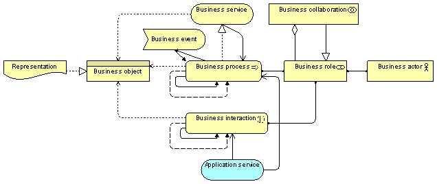

The Business Process Co-operation viewpoint is used to show the relations of one or more business processes with each other and/or with their environment. It can both be used to create a high-level design of business processes within their context and to provide an operational manager responsible for one or more such processes with insight into their dependencies. Important aspects of business process co-operation are:
Each of these can be regarded as a “sub-view” of the business process co-operation view.
| Stakeholders | Process and domain architects, operational managers |
| Concerns | Dependencies between business processes, consistency and completeness, responsibilities |
| Purpose | Designing, deciding |
| Abstraction Level | Coherence |
| Layer | Business layer, Application layer |
| Aspects | Behaviour |
Concepts and Relations
